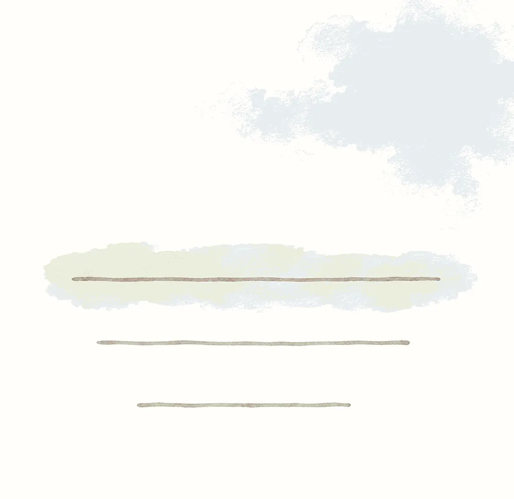
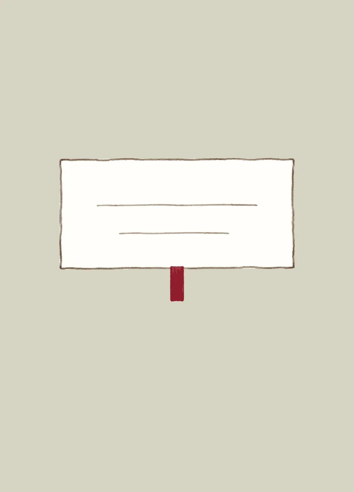
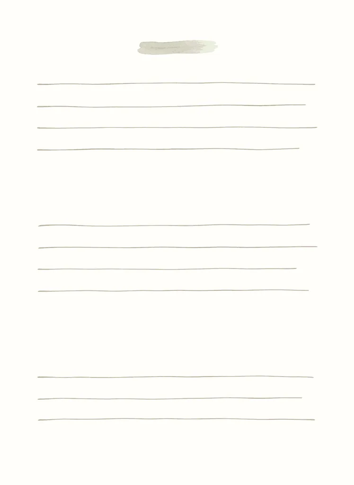

做网站的方法
首页没放下的审美原则，加上验收的做法，包括屋主的三台设备、每个档位查什么、先量后截图、七条防假信号、测试不出声、文档同一轮改。每条配一个小示例，全在页面里计算，不开浏览器，也不发请求。
其余审美原则
总览页放了十条（两种气质、偏软偏轻、审美优先于对比度、要好看不要更紧凑、等比放大、首页净增为零、真线条图标、暖靠冷底、留白对称、先做出来），这里是其余的几条。只升级已有交互、不为套组件造新功能那一条在交互页，见只升级已有交互。
正对的东西要端正，不用怪形状
选卡台正中那张不旋转，最大，离得最近，两侧的卡侧立让位。卡集原来的球形选卡，正对的那张也跟着球面歪着，因此被否，改成了Cover Flow。
示例七张示例卡，用左右方向键或按钮换中间那张。切到球形选卡，可以看到正对的那张跟着球面倾斜。
正中是第4张，rotateX 0°、rotateY 0°，摆得端正。
数值
/* card 画廊 Cover Flow（gallery.js 按舞台尺寸算） */
正中一张：rotate 0，最大最近（宽 .50H）
两侧：rotateY ±60° 后退、等距重叠（宽 .44H），越远越暗到 .45
透视2.2H、透视原点正中；切换380ms 苹果 ease，减弱动效直接切
用在哪
card画廊的选卡台，替代了原来的转盘和球两档。中间那张卡上下留白对称，倒影放在下边距里，见总览页留白对称那条。
为什么
正对着看的那一张最受注意，它稍微歪一点就会显得不对。球形排布让每张卡都带着曲面的倾角，正中那张也一样。Cover Flow只让两侧让位的卡倾斜，正中那张始终端正。否掉的方向里球形选卡那条，按card当时球档的几何画了球，和Cover Flow并排对照，两边都能拖。
「我发现这些卡片正对我们的时候有一点倾斜，并且有一个球感觉很奇怪，你想想有没有别的更合适的方法来总的展示」
出处：tools/card/CLAUDE.md:160「画廊的几条硬约束」、:161、:162、:174；原话：控制室会话记录（2026-09-23 02:29）；memory/ysevan-workspace-map.md:19「否掉球形选卡」记的「正对的卡歪、球看着怪」是转述。示例里的倾角和半径是示意，不是card的原数。
转场只用站里已有的元素
小屋换页先做过两版门，实心双开门和纸色格心门，都被否了。定稿是水彩风格的洇一层纸，纸色水痕从中央洇开盖住画面，在纸下面换页，水干后褪去。
示例选一种转场，点换一页。前两种是被否的门（示意），第三种是洇一层纸的简化示意，不是原样，原来的曲线和时长见动画页的洇一层纸。
洇一层纸，用的是小屋本来就有的水彩元素，纸、水痕和颜料边，没有新加任何物件。
三版
- 实心双开门。门板用色块色（白天橄榄，夜里青黛），加把手和中缝的细线。合门0.45s，挡住路由加载，开门0.75s，带透视向外摆开。被否。
- 纸色格心门。纸色门板，双圈细线的格心，黄铜圆钮。被否。
- 洇一层纸。带颜料边的纸色水痕从中央洇开，在纸下面切换路由，水干后褪去。只改scale和opacity，由合成器处理。定稿。
为什么
门是新造的物件，要有自己的材质、把手和开合方式，站里别处都没有。小屋的画是水彩，底是纸，水彩洇纸用的就是这两样。以后加任何过场效果，先看它用的是不是这个站本来就有的东西。两扇门按当时提交里的原值，在否掉的方向的换房间的门里重做了一遍。
用在哪
小屋换页（page-veil.tsx和xw-veil样式）。工具类网站的切页是另一种做法，正文淡入并上移8px，侧栏不动，见动画页的切页进场。
出处：控制室记录 memory/ysevan-web-state.md:53「门升级为实体双开门」、:54「纸色格心门」、:55「转场定稿」
屋主的手绘稿就是风格，不是占位图
屋主的手绘稿颜色少、线条少，看起来像没画完，这是他的风格。照原样用，不补色补细节，不换成更满的图，也不在评审里标成待换图。
示例三张都是屋主的真画稿。刷刷那张现在是小屋工具架3D文具上的纸面，岗岗两张在2026-10-26岗岗下线前是3D手册上的纸面。切到当成占位换掉，看会丢掉什么（示意）。

占位图待换刷刷闪卡正面

占位图待换岗岗手册封面

占位图待换岗岗手册内页a
原样，三张都是屋主画的，颜色少，线条少，这就是小屋的手作气质。
用在哪
小屋工具架的3D文具。刷刷那叠闪卡的五张正面贴这张画稿，卡背屋主没画，用素纸，静帧海报也按画稿重新渲染过。岗岗手册的封面和八个纸面（内页a到d四张循环）在2026-10-26岗岗下线前也贴屋主的画稿，书脊用素橄榄色，下线后3D场景不再放这本手册。
为什么
颜色少、线条少是画的一部分，手作气质就来自这里。以看起来没画完为理由去补色、补细节，或者换成生成的满图，站上就没有屋主自己画的东西了。拿不准是不是占位图时，先问屋主，不要替他补。
坑
评审清单和TODO注释里写占位图待换最危险。下一个人会照着清单把画换掉，还以为自己是在收尾。
出处：控制室记录 memory/ysevan-web-state.md:17「少色是手绘风格，非占位」；刷刷那张在 old/ysevan/shelf/，岗岗两张在本站 assets/art/（小屋工具架同一批文件，2026-10-26岗岗下线后从小屋仓库 retired/ 逐字节拷来）；下线后3D不再放手册见 Ysevan_web/docs/xiaowu-ui-spec.md「6.9.1 四件物件」（「不再渲染、不进场景那一包」）
名片为主，不放页脚、联系方式和自我介绍
门厅只告诉访客一件事，「这是谁的地方，可以随便逛」。常见网站会顺手加上的东西，小屋规格里有一张「明确不存在的元素」清单，评审时按它核对，不要加回来。
示例点下面的按钮，把常见网站顺手加的东西放进名片（示意），看清单怎么判。
小屋
Ysevan的小屋。
往下滚 ↓按清单，不加往下滚提示
最新随笔 · 9月27日 · 9月25日 · 9月22日按清单，门厅没有预览列表
关于我：一名……热爱……按清单，没有自我介绍
邮箱 · GitHub · 微信按清单，不放任何联系方式
今日访问128按清单，没有访问统计
© 2026 · 备案号 · Powered by按清单，任何形式的页脚都没有
名片只告诉访客一件事。
清单
- 属于结构的有页脚（版权、备案号、社交图标、回到顶部、Powered by）、
/about、面包屑、侧边目录、分页器、搜索框、标签云、分类导航。 - 属于内容的有自我介绍、简历、技能条、经历时间线，联系方式（邮箱、GitHub、微信等），版权和备案信息，门厅上的项目和随笔预览列表，工具卡上的外链按钮。
- 属于功能的有评论、点赞、收藏、订阅、RSS、分享，注册、会员，访问统计（页面上看得见的访问量、阅读数这类计数）、看板、广告、弹窗、Cookie同意条。
为什么
目标是陌生访客30秒内知道这是谁的地方，而且不用做任何事。每多一件常见网站都有的东西，门厅就更像一份简历或一个门户网站。有了清单就不用每次重新讨论，最常见的走样就是顺手加上一件。
本站例外
设计合集是工具，不是名片，所以有搜索、目录和更新记录。这一条只管小屋。
出处：Ysevan_web/docs/xiaowu-ui-spec.md「1.1 定位」（「名片为主」）、「1.2 六条原则」（「名片优先」）、「1.3 明确不存在的元素」（「页脚」「自我介绍、简历」「联系方式」「页面上看得见的访问计数」）
借发布会页面的结构，不借视觉
小屋工具页借发布会页面的结构，不借它的视觉。2026-10-21以前借的是一屏一个概念、巨字、大量留白、逐屏揭示、一条规格条和一个明确的主操作。大黑底、产品摄影、戏剧化渐变一概不用，页面仍是纸底、橄榄墨和细线。
示例照2026-10-21以前工具页的展台画（示意，数字是编的）。点下面五个结构，看各在哪里。再切到连视觉一起借，看两种视觉风格混在一起的样子。
第2件，刷题软件
刷刷
一个人的题库练习本。
1,284道题6个题库3种练法
打开刷刷
只借结构，纸底、橄榄墨，身份色只用在序号、主操作这类小面积上。
用在哪
2026-10-21以前，小屋工具页/projects的展台一件一整屏，左文右图，有巨字和规格条，3D展品随滚动出场。10-21屋主改版，工具页按功能分成三区，一件一张卡，发布会的结构只留下一屏一个概念，变成一区一组，卡上不再放巨字和规格条。身份色仍只用在编号、图标块、打开按钮和焦点环四处。
为什么
发布会页面的长处在节奏，一次只讲一件事，字大，留白多，只有一个按钮。它的大黑底、产品摄影和戏剧化渐变是另一种风格，和小屋的暖纸中性色放在一起，就是两种气质混用（见总览页两种气质那条）。
出处：Ysevan_web/docs/xiaowu-ui-spec.md「6.1 借结构，不借视觉」（「发布会结构里留下来的只有」）、「6. 工具页 /projects」（「借发布会页面的结构」「三个按功能分的区」）；10-21以前的展台照 Ysevan_web@261fe19 docs/xiaowu-ui-spec.md「6. 工具页 /projects」（「2026-09-04 屋主裁定整节重写」）
小屋的六条原则
小屋规格开头的六条原则，名片优先、少即是真、手作克制、零固定高度、不阻塞、两个时辰，后面的取舍都从这里来。拿不准一个改动时，按这六条逐条核对。
示例选一条原则，再点看反例，同一张小名片会改成违背这条原则的样子（示意）。
门厅只告诉访客一件事，「这是谁的地方，可以随便逛」。不放任何列表、预览、统计和引导按钮。
小屋
Ysevan的小屋。
写写随笔，摆几件自己做的工具。
最新随笔 · 共28篇 开始探索 →
NEWHOT✦✦✦
正在等字体和开场动画
名片优先，现行做法。
六条
- 名片优先。门厅只告诉访客一件事，不放列表、预览、统计和引导按钮（清单见名片为主那条）。
- 少即是真。每个元素要么承载内容，要么承载导航。唯一的例外是四处绿植装饰，完全不占布局，不响应事件，不带动画。
- 手作气质，工程克制。楷体、行楷和宋体只用在少数标题和数字上，正文一律用黑体。饱和色严格限制用量和位置。
- 零固定高度。内容多就往下长，内容少就居中留白。
- 不阻塞。开场动画、自托管字体和装饰SVG都不能挡住首屏内容，也不能延迟数据获取。
- 两个时辰，一间屋子。夜里不做反相，是同一间屋子的夜晚，冷夜暖灯。切换入口是顶栏的墙壁开关（见交互页墙壁开关）。
为什么
这六条把小屋是一张名片、一间手作的屋子这个定位，拆成了能逐条核对的句子。新需求先按这六条过一遍，违背哪条就不做，或者换一个不违背的做法。
「像家里的开关」
出处：Ysevan_web/docs/xiaowu-ui-spec.md「1.2 六条原则」
降级后和改动前的页面逐像素相同
3D、漂浮、走进小屋这类增强层降级后，要和改动前的构建逐像素比对，差异必须是0。不留占位，不留半透明的残影，版面不挪动一个像素。
示例左边是改动前的页面，中间是加了增强层、在这一档降级后的页面，右边是逐像素比出来的差（红点）。可以换几种降级写法对比。
改动前
改动后的降级档
逐像素差
差异像素0，降级后和改动前的页面完全相同。
验收
在1440×900下和改动前的构建逐像素比对。三页的白天和夜里，各在滚动位置0、没动过鼠标时比一次。减弱动效、800px宽、触摸、省流量、禁用JS、WebGL失败这六档，动过鼠标后再比。差异像素都是0，没有一档挂上画布。首屏多出来的只有那个岛本身（gzip后约1.3KB，一个请求）。
为什么
降级档的访客看不到增强效果，他看到的应该就是没有增强时的那一页。降级后还留下任何东西，都是给他的页面平白多加了东西。逐像素比对是唯一不靠眼睛的判断方法，结果是0才算过。
坑
夜里有一块会明暗起伏的画（8秒一次的夜灯），比之前先把那块画布藏起来。同一个构建和自己比也有差异时，量到的是环境，不能算在增强层上。
出处：Ysevan_web/docs/xiaowu-ui-spec.md「4.8.4 触发与降级 › 首屏与降级的验收」、「4.9.3 什么时候有跑道（分档与降级）」（「降级的终点就是今天的门厅」）
行为不取决于用户忘掉的往事，隔离不留痕迹
一个功能的行为，如果取决于用户早就想不起来的历史状态，一律否掉，不用先问。库和库之间的隔离，连能看出另一个库存在的条数、日期和提示都不能出现。
示例日程安排生活库的本周回顾（示例数据）。底下那行往事是三个月前做的事，你早就忘了。切换它，看两种设计下回顾页会不会变。
只看当前库，往事怎么变，回顾页都一样，也看不出另一个库存在过。
实例
周回顾原本可以在工作库已解锁时合并显示两个库。但工作库上锁时是加密存储的，密钥只在它自己那个已解锁页面的内存里，生活库页面读不到，所以合并只会在工作库从没设过口令时发生。屋主会看到回顾页有时有工作、有时没有，却不会想到这和当初设没设口令有关。现行做法是周回顾只看当前库，也不出现另一个库上锁了这类提示。
为什么
用户解释不了的行为就是bug，即使代码完全按设计运行。控制室的原话是「这条理由比隔离原则本身还硬」。代价是某些天的回顾看起来像普通的空白日，这是隔离本来就要付出的。
护栏
只看当前库的三条测试跑整个<App />，走真实的读库键路径，不直接给组件传数组。直接传数组的话，读错键这种错根本不会发生。这三条也先红过一次，让组件临时去读另一个库，三条当场全红。
出处：tools/plan/docs/BUSINESS_LOGIC.md:1709「隔离到什么程度」、:1786「为什么不做「已解锁就合并」」、:1791；控制室记录 memory/no-behavior-from-forgotten-state.md:13「一律否掉」
设备与验收档位
屋主的三台设备
台式机2040×1019@1.25，没有显卡，笔记本2552×1274@1.5，手机417×750@3.5。这些都是屋主本人用诊断页实测的视口（CSS像素），不是屏幕分辨率。之前按2560 CSS像素定的大屏规则错过两次。
示例四个框按真实尺寸比例画在一起。点一台看细节，切到物理像素，看同一块屏幕实际要渲染多少像素。
1
2
3
4
数值
台式： 2040 × 1019 DPR 1.25 Microsoft Basic Render Driver（WARP 软件渲染） --scale 1.417（未封顶）
笔记本：2552 × 1274 DPR 1.5 RTX 4060 Laptop --scale 1.45（封顶，2088起）
手机： 417 × 750 DPR 3.5 Adreno 750 （地址栏收起后417 × 903）
Mac： 1440 × 900 （开发机，等比基准，1440及以下一个数都不许变）
怎么用
- 大屏两档都要拍。2040那档看没封顶的纯等比，2552那档才看得出1.45封顶后的样子。
- 为什么没有3D这个问题只出在台式机上，笔记本和手机本来就有3D。
- 手机按417拍图。判断装不装得下用750（最坏的情况），判断会不会显得空用903。和高度有关的尺寸一律用dvh或svh，不用裸vh。
为什么
台式机物理宽2560，Windows缩放125%，视口其实是2040。按2560推出来的两个结论，1.45封顶在他的机器上会触发、填满和等比要取舍，都错了。所以公式必须是视口除以1440。线性爬坡在2040处只给1.241，比等比的1.417小约12.4%（反过来算是等比大14%，plan的SPEC原来写成小14%，比反了，plan提交ab7bbd4已经改正）。
出处：tools/plan/docs/design/SPEC-apple-glass.md:81「屋主实机实测」、:83「线性爬坡」、:88、:89、:91、:92；tools/shua/design-proposal.md:425「中间一律偏小」（刷刷3.14.2改对的算法）；控制室记录 memory/owner-devices-viewports.md:8「错过两次」、:12「Windows 台式」、:14、:22「手机档按」、:24、:25
验收档位清单
常规档位全部要跑，屋主三台真机的档位一个不少，带浏览器工具栏的真实高度另跑一档。每一档都有只在那一档才出现的问题，漏一档就会漏掉一类错。
示例点一档，看它查什么、为什么要单独跑这一档。也可以点上面的一类问题，看哪几档负责查它。
点一档看说明。
档位
- 1440×900@1的浅色和深色，是等比基准，1440及以下的数值一个都不能变。对比度在这两档按最不利的底色用两种方法验收，见色彩页对比度怎么算。
- 1100（侧栏还在的窄桌面）和768（900以下侧栏收成顶栏，还没到600换成底部标签栏）。
- 390@3和417×750@3.5都要跑。390更窄，反而会掩盖417才刚好放不下的那一类问题。
- 2040×1019@1.25带软件渲染旗标，是屋主的台式机，看长帧。2552×1274@1.5，只有这一档看得出封顶。
- 带工具栏的真实高度，台式机2040×930，笔记本2552×1180，断言
scrollHeight === clientHeight。 - ⌘+缩放，相当于视口变窄，不能出现横向滚动条。
为什么
每一档都对应一类只在那一档出现的错。封顶后的样子只在2552看得到，浏览器工具栏占掉的高度只在930看得到，软件合成的卡顿只在台式机那档看得到。档位清单列的就是这些错分别出现在哪一档。
出处：tools/star/CLAUDE.md:71「测试」；tools/plan/docs/design/SPEC-apple-glass.md:79「现行规则」、:91、:95「浏览器缩放」；tools/card/CLAUDE.md:172「带浏览器工具栏」；控制室记录 memory/owner-devices-viewports.md:22「手机档按」
大屏验收先量后截图
模拟2040×1019@1.25的视口，往页面里放一条探针数据，用getBoundingClientRect量关键元素的左右边缘离视口和行边缘各多少像素。回报时附上这些数字，截图只当附件。
示例一张2040宽版面的缩略截图（示例数据）。A、B两版的右侧停靠栏，只看截图分不出哪一版贴着行的右缘，放探针量一下就知道。
截图缩到这么小，两版看起来一样。
做法
// 量具里：设视口2040×1019@1.25 → 灌探针数据 → 量 → 回报数字 → 删探针
const r = el.getBoundingClientRect();
const row = rowEl.getBoundingClientRect();
report({ leftGap: r.left - row.left, rightGap: row.right - r.right, vw: innerWidth });
为什么
控制室两次把大屏规则定错（整壳居中留白、1600以上多列），都是因为只看截图不量数。plan停靠位在2040下是1100×scale，只比行宽小几像素，看起来等于右对齐，这个结论也是量出来的，截图看不出。判断像不像停住、留白够不够，都看数字。
出处：控制室记录 memory/bigscreen-verify-by-measure.md:11「大屏验收」、:13、:14「先量后截图」。示例里的宽度是编的，只用来说明截图里几像素的差看不出来。
无头Chrome设视口，不设窗口
用Emulation.setDeviceMetricsOverride设视口（puppeteer的setViewport内部也是它）。顺序是先navigate再设视口，设完当场读innerWidth、devicePixelRatio和决定版面档的媒体查询，对不上就抛错。
示例四种设法（示意，不开浏览器）。截出来的图都是手机尺寸，里面的版面却不一定按手机排。打开对账断言才分得出来。
代码
async function setViewport(c, w, h, dpr, mobile) {
await c.send("Emulation.setDeviceMetricsOverride",
{ width: w, height: h, deviceScaleFactor: dpr, mobile, screenWidth: w, screenHeight: h });
const got = await evaluate(c, "({w: innerWidth, dpr: devicePixelRatio})"); // 已经 navigate 过
if (got.w !== w || Math.abs(got.dpr - dpr) > 1e-6) throw new Error("viewport mismatch");
}
三个成因
--window-size设的是窗口。macOS的最小窗口宽度把它夹到500，不报错，PNG照样是390×844，布局却按500排，手机断点没有命中。- 页面没有
<meta name="viewport">，又开了mobile:true，Chrome给980的默认布局视口。 - 在还没navigate的
about:blank上读，读到980（读的是上一页）。
三种现象一模一样，都不报错，只能靠对账断言区分。这道护栏也要真的红过一次，拿掉viewport meta的副本读到980，断言抛错，正常页面读到390，通过。
坑
只核尺寸不够，(max-width:900px)、(hover: hover) and (pointer: fine)这几条决定版面档的媒体查询也要核。尺寸都对、跑的却是桌面版面时，截图、帧率和画布尺寸全是错的。
出处：控制室记录 memory/headless-viewport-not-window.md:10「设的是窗口」、:11、:16「先 navigate 再设视口」；memory/webgl-headless-chrome-testing.md:23「前提坑」、:25「about:blank」、:28「护栏要真红一次」、:30「媒体查询」；tools/star/CLAUDE.md:70「设视口不设窗口」
手机模拟下判溢出，跟目标宽度比
开了mobile:true时，内容撑破屏幕后，Chrome不让scrollWidth变大，而是把innerWidth本身撑宽，所以scrollWidth === innerWidth永远成立。判据要跟目标宽度比，不跟当时的innerWidth比，并逐个检查元素右缘不超过目标宽度。
示例417宽的手机模拟，数字照刷刷那次实测。先塞一个477px的撑破块，看三条判据哪条红。再换成会被页面夹住的注入，看这时判据全绿为什么不算数。
代码
const W = 417; // 目标宽度，不是此刻的 innerWidth
const doc = Math.max(document.documentElement.scrollWidth, innerWidth);
const over = [...document.querySelectorAll("body *")]
.filter((el) => el.getBoundingClientRect().right > W + 0.5);
ok(doc === W && over.length === 0);
先红一次
注入撑破块要写min-width加max-width:none，并先确认注入物自己真的越界了。否则块会被页面的max-width夹住，根本没撑破，判据变绿只是因为没有东西可抓。
坑
页面被撑破后innerWidth先变成491，过一两帧有时又缩回417，所以scrollWidth大于目标宽度这条判据时红时绿（改前改后两棵树都这样）。量具自证时只认逐元素越界。
出处：控制室记录 memory/headless-viewport-not-window.md:20「手机模拟下」；memory/three-rules-against-false-signals.md:82「注入撑破块」、:90「Chrome 手机模拟」
防假信号
看起来有信号、其实信号是假的，这类错最难查，复查代码查不出来，只能靠规矩提前挡住。任何新写的护栏、门禁和自动降级，落地前都按下面几条过一遍。
七条防假信号
新护栏落地前逐条核对。不拿可变文案当判据，先让它红一次，门禁跑在稳定快照上，判据不掺自己加的量，断言零件接没接上，阴性结论附阳性证据，判据先在改前的树上跑。
示例七个情景，改编自各项目真踩过的坑。每个情景选出它违反的那一条。
第1题，共7题
答对0题
七条
- 不许拿可变的显示文案当判定依据。
- 测试先让它红一次再修绿。突变要精确，一次只坏一件事。
- 门禁跑在验证过的稳定快照上（连续两轮、每轮3秒源树无变化才放行）。
- 判据里不许掺我们自己加的量（限帧、节流、去抖、人为延迟）。
- 断言零件接没接上，不断言零件在不在，也就是断言按规则算出来的最终结果。
- 阴性结论必须附阳性证据。先确认自己的量具看得见要否认的东西。
- 判据先在改动前的树上跑一遍，改前也红就是在量环境。
另有一条配套，复核子代理要复现它声称的现象，不能只核对结论是否安全。
为什么
这几种错看起来最像成功，全绿，零错误，没有任何报警。这些规矩是为了在写判据时就把它们挡住。
出处：控制室记录 memory/three-rules-against-false-signals.md:3「七条防假信号」、:13、:14、:22、:23、:35、:56「复核子代理」、:60、:85
判据先在改前的树上红一次
写完的护栏先拿到改动前的树上跑，不红说明它看不见要防的那个错。红了也还不够，再造一棵零件在、但没接上的树，判据在这棵树上也要红。红一次是必要条件，不是充分条件。
示例一个按回车就记一条的小输入框，有三棵树。可以在框里打字后按回车（用中文输入法选词时按回车，看改前会不会把半截拼音记进去），再让两条判据在三棵树上各跑一遍。
| 判据 | 改前 | 改后 | 没接上 |
|---|
| 行为判据，组字回车不记，普通回车记一条 | | | |
|---|
| 找字判据，源码里有没有isComposing | | | |
|---|
还没跑判据。
代码
// 行为判据：真派一个组字中的回车，断言什么都没发生；再派普通回车，断言记了一条
input.dispatchEvent(new KeyboardEvent("keydown", { key: "Enter", isComposing: true }));
expect(list.length).toBe(0);
input.dispatchEvent(new KeyboardEvent("keydown", { key: "Enter" }));
expect(list.length).toBe(1);
两条要领
- 突变要精确，一次只坏一件事。把整个文件弄坏，只能证明测试能发现文件坏了。plan那次，子代理的破坏让15条全红，看不出区别。换成精确破坏后，恰好3条红、12条绿，红的正是库隔离那三条。
- 护栏要检查到真正会出错的那一层。突变按有人想绕过它时会怎么做来写。
用在哪
输入法回车的规矩（见交互页输入法回车）就是这样测的。先发isComposing:true的回车，断言什么都没发生，再发普通回车，断言正常提交。
出处：控制室记录 memory/three-rules-against-false-signals.md:14「测试先让它红一次」、:16、:20、:35、:39「突变自测」、:85「改前的树」；memory/ime-enter-is-not-submit.md:17「测试写法」、:18
等动画和滚动停稳再读值
点了马上读，读到的是过渡半路的值。读el.style.transform永远是空的，因为FLIP设完反向位移会立刻清成空串，交给过渡去走。要读终值就等transitionend，要判断有没有在动就读getComputedStyle。
本站用在透明顶栏（总览页）
示例方块每次滑到另一头（600ms过渡）。三种读法，读到的数写在下面。
代码
el.style.transform = `translateX(${x}px)`; // 触发过渡
await new Promise((r) => el.addEventListener("transitionend", r, { once: true }));
const m = new DOMMatrix(getComputedStyle(el).transform); // 终值
// 判「有没有动」：同一刻读两次 computed，不读 el.style
用在哪
本站外壳判断大图是否还压在顶栏底下时，正文还在做进场位移（page-in的8px），第一帧就量会判错。star.js按布局位置算，扣掉此刻进场的translateY，进场animationend后再判一次。量具里也常拿读早当红探针，故意早读一次，判据必须红。
坑
减弱动效开着时过渡被关掉，立刻读也是终值，读早这条判据在那一档红不了，要在不减弱动效的档位让它红。
出处：tools/star/CLAUDE.md:91「别读早」；控制室记录 memory/three-rules-against-false-signals.md:81「FLIP」
判据里不掺自己加的量
限帧、节流、去抖都会让量出来的间隔只剩几个离散值，阈值刚好落在其中一个值上时，降不降档就成了随机的。阈值要按这一档承诺的帧率写成倍数，量这一段时间里实际送出去几帧（均值），不在台阶上取中位数。
示例用随机数模拟一个限帧29ms、60Hz刷新的3D岛（示意，不是实测）。同一份构建跑三次，看两种判据的结论稳不稳。拖动滑块可以换成一台真的更慢的机器。
点同一份构建跑三次。
实例
小屋3D看门狗量帧间隔，间隔里掺着自己加的29ms限帧（rAF是60Hz，所以只能是33.3、50、66.7），阈值50恰好落在其中一个台阶上，同一个构建三次量到47.7、49.7、59.6。屋主说的「有时候有3D有时候没有」就是这样来的。
做法
- 用相对阈值。按这一档自己要求的帧率的比例写，不写绝对毫秒，人为限帧的影响就被除掉了。
- 量连续的量。均值就是这一秒实际送出去几帧，不在量化台阶上取中位数。做对之后，处理限了帧的那类分支应当整个消失。
- 几个条件同时成立才判定时，至少一个是干净的量，而且它能单独决定结果。更好的问法是这是不是我造成的，而不是现在好不好。
坑
不要改成量画一帧花多久就算完。WebGL是异步的，用performance.now()夹着render()只量到CPU提交的时间（gl.finish() 0.2ms，readPixels 95.6ms，差478倍），照字面改会得到一个只要提交得快就判健康、实际什么也查不出的看门狗。节流器本身不受这条约束，限帧只管送帧的节奏，不拿来做判断。
出处：控制室记录 memory/three-rules-against-false-signals.md:23「护栏的判据里」、:24、:25、:29、:32「别写成」、:58「更优的形式」
阴性结论附阳性证据
说没报错、没降档、清干净了的时候，要同时给出该发生的事确实发生过的证据，比如画了多少帧、跑了多少用例、进程表里剩下什么。第一步先确认量具看得见要否认的那个东西。查残留进程按名字查，不按端口查。
示例一张示例进程表，量具跑完留下了两个残留进程。换三种查法，看哪一种说清干净了是真的。
选一种查法，然后点查按钮。
代码
// 先存一份快照，按名字查，排掉自己和整条祖先链；同一快照、同一过滤要先看见一个已知存在的进程
const ps = execFileSync("ps", ["-axo", "pid=,comm=,command="], { encoding: "utf8" });
const ctrl = spawn(process.execPath, ["-e", "setTimeout(()=>{},20000)", "prof-xx-ctrl"]);
// 命中 ctrl 恰好1个 → 杀掉 → 0个，这把尺子才算看得见东西；然后再查真名字
实例
- 验证30Hz屏上不能误杀时，第一版写坏了，岛根本没画，
tier=high是假通过。重写成每次请求等两个真实帧之后，才拿到435帧这个真实的数。 - 汇报进程都清干净了时，用的是查监听端口，残留的却是一个客户端（挂在已关掉的服务上42分钟），那条命令本来就看不见它。
坑
本机zsh下没加引号的$PIDS不会按空格拆开，kill把12个PID当成一个参数，全部失败，输出却没有任何报错。要用数组，并逐个PID复核。本机的grep是ugrep的别名，grep -v grep排除不掉它自己。
出处：控制室记录 memory/three-rules-against-false-signals.md:60「阴性结论必须附阳性证据」、:63、:65、:69、:75、:77、:78；量具写法照 tools/star/CLAUDE.md:73「测完按草稿区目录名查残留进程」
代价不对等时往后果轻的一边错
写降级、熔断、告警这类判据前，先比较误判和漏判哪个后果重，把盲区放在后果轻的一侧，并把理由写进注释。不写理由的话，下一个人会以为两条规则互相矛盾。
本站用在背景模糊（全站）
示例选一个实例，拖两边的代价，看拿不准时该往哪边错（代价是示意的打分）。
三个实例
- 本站背景模糊的自动档，没测过显卡时先按lite（只压暗，不模糊）。误判成full，没显卡那台整页卡顿。误判成lite，只是第一次打开时少一点景深。
- 刷刷的3D帧守卫，误判会关掉好机器上的3D，而且整个会话都记着。漏判只是让一个匀速偏慢、还能看的画面继续跑。所以判据的盲区落在漏判那一侧。丢弃超长卡顿的上限也不放宽，放宽会把被节流的后台标签页误判成慢机器。
- 输入法回车，拦提交只认
isComposing，不认229。安卓软键盘不在合成时也常报229，拦了会让键盘上的搜索键按了没反应，后果重。提前return不处理的那一步可以两个都认，后果轻。
用在哪
本站boot.js里，背景模糊设为自动时，star-gpu没测过就先按lite，star.js空闲时测一次再改。
诊断法
阈值反复调不准时，先构造两个方向的反例。刷刷那次证明，同一个判据会放过22帧的卡顿，又把流畅的30Hz屏判成慢。两种情况同时成立，说明只调阈值修不好，必须换判据。
出处：tools/star/assets/boot.js:11「没测过也按 lite」、:12、:13；tools/star/CLAUDE.md:92「没测过先按 lite」；控制室记录 memory/err-toward-lighter-consequence.md:10「代价不对等时」、:14「诊断法」、:16；memory/ime-enter-is-not-submit.md:24「拦提交只认」
测试环境
测试时电脑不能出声
无头Chrome一律带--mute-audio，测完按目录名查进程，要查到0个。测允许自动播放时也照样静音，验证看audio.paused和currentTime，不靠耳朵听。不用浏览器面板去点任何播放按钮。
示例模拟跑一轮带背景音乐页面的测试（这块不放任何声音，喇叭只是画的）。两个开关都关着跑一次，再都打开跑一次。
扬声器没有声音。
代码
const args = ["--headless=new", "--mute-audio", "--user-data-dir=" + profDir, …];
// 要验「在播」：读 audio.paused === false、currentTime 在走——静音不影响这两个值
// 要测音频文件：say -o 生成到文件（不出声），测完删掉
为什么
无头Chrome默认允许自动播放，声音照样从扬声器出来。那次还叠了两个坑，一是测试页设了循环播放，二是脚本结束时chrome.kill()只杀了主进程，残留的渲染进程一直在循环播放测试语音。
「不要在电脑播放任何音乐……电脑播放音乐吵死了」
别理解反
这句话说的是测试时电脑出声，不是让网站不放音乐。那次误删了网站的播放器，后来又放了回去。
出处：控制室记录 memory/no-audio-during-tests.md:11「吵死了」、:13、:16、:17、:18、:19；tools/star/CLAUDE.md:70「--mute-audio」
怎么测软件渲染
复现屋主的台式机用--disable-gpu --use-gl=swiftshader --enable-unsafe-swiftshader三个旗标。不带unsafe那个，Chrome 122起根本拿不到WebGL。--use-angle=swiftshader会让严格探测也通过，不能拿它测。Windows上多一档WARP，Mac上模拟不出来，只能在真机上测。
示例选一组旗标，看实测的结果（各项目2026-09-23的真值表）。也可以让这台浏览器自己探测一次，这是真的运行，只在点了按钮时运行。
还没探测。
代码
// 两段式：严格先要（有显卡的机器行为一字不变），拒了再放宽
const strict = canvas.getContext("webgl", { failIfMajorPerformanceCaveat: true });
const loose = strict || canvas.getContext("webgl", { antialias: false });
// 两段都拿不到：安安静静回静态版——零请求、控制台零输出
为什么
四家的3D都带failIfMajorPerformanceCaveat:true，这个标志专门拒绝软件渲染，所以屋主没显卡的台式机一直只看到静态版。验证拿掉它能不能跑时，带unsafe旗标测出来能，不带旗标测出来照样拿不到。屋主的浏览器不会带旗标，带旗标那次不能单独拿来下结论。Windows上行不行，要用工作区根目录的3D诊断.html在真机上跑。
还有一层
没显卡时最慢的其实是玻璃模糊，不是3D。一个24px的方块在玻璃卡里变色，整页只有4fps，放到玻璃外是120fps。量合成开销要用有窗口的浏览器，无头模式每帧整屏重画，数字偏悲观。新加的面要不要加磨砂，用AB对照量长帧个数（只看P95会漏掉稀疏的卡顿）。
出处：控制室记录 memory/webgl-software-render-gate.md:8「这个标志专门用来拒绝软件渲染」、:12「测试陷阱」、:14、:16、:18「两段都拿不到」；memory/ganggang-v120-pending.md:35「四旗标真值表」；memory/ysevan-web-state.md:62「别用它测」；memory/glass-blur-cpu-compositing.md:11、:15、:21「只看 P95」
后台标签页会暂停rAF
标签页在后台时，浏览器会暂停requestAnimationFrame，WAAPI和过渡的时钟也停。事件确实触发了、rAF循环里写的东西却一直不出现时，先查document.hidden。截一张图之后就好了，多半就是这个原因。
示例点一下点我，事件监听同步记一次，rAF循环把数写到页面上（碰过这块示例才开始跑rAF）。先点模拟进后台，再点几下点我，看哪个数不动，然后点模拟截图。开始之后，真的切到别的标签页再回来，下面会记下一条真实的记录。
监听收到0
rAF写到页面0
document.hiddenfalse
量具里
--disable-background-timer-throttling --disable-backgrounding-occluded-windows
--disable-renderer-backgrounding
Emulation.setFocusEmulationEnabled { enabled: true }
// 每项结束断言 document.hidden === false；进了后台就作废重跑，不算红
为什么
浏览器面板的标签页常在后台，调门厅视差时为这个耗了好几轮。无头Chrome加CDP也会遇到，长时间运行的验收脚本跑到一半页面进了后台，rAF停了，WAAPI不推进，对话框的close事件不来，判据就误报红。在面板里调rAF动效时，把断言和触发放进同一批操作，前面先截一张图，把标签页顶到前台。
出处：控制室记录 memory/browser-pane-raf-pause.md:8「浏览器面板」、:9、:10「截图之后就好了」、:14、:17「无头 Chrome + CDP 也会中招」、:19、:21
长期留用的验收脚本放本机验收目录
回归、验收这类下一版还要复跑的脚本，写完就拷进家目录下的.ysevan-verify/<项目>/，并补一行说明。只有一次性的探针才留在会话草稿区。草稿区在系统临时目录里，每到零点按文件年龄清掉一批。
示例把时间拖过零点，看两个目录里的文件（示例），再点第二天复跑回归。
本机验收目录家目录下的.ysevan-verify，按项目分
23:00，两边都在。
为什么
草稿区是会话级的，而且会被清理。2026-09-28刷刷的续做回归脚本就是这样被删的，后来从会话记录里捞回heredoc，再重放后续改动才恢复。岗岗第十一轮放在草稿区的那批脚本也被清掉了。长期要留的东西不放系统临时目录。
用在哪
本站的量具都在本机验收目录的star/下，各有一节说明怎么跑（不进仓库）。
出处：控制室记录 memory/verify-scripts-home.md:8「控制室 2026-09-28 定」、:12「岗岗第十一轮」、:15「How to apply」；memory/three-rules-against-false-signals.md:91「零点会按文件年龄清」
文档与交付
文档同一轮改，错话的三种形态
改了什么，就在同一轮把对应的文档改掉，不留待办。收尾时把这一轮动过的概念关键词在全仓grep一遍。错话有三种，数字过期、正确的指针指向错话、结论还对但理由已经不成立，找法各不相同。
示例这一轮把精简档的像素比从固定为1改成了min(devicePixelRatio, 1.5)。下面七行（示例，改编自小屋那一轮）里，点出认为要改的，再点交卷。
选好了点交卷。
三种形态
- 数字过期，最好找。拿旧值当关键词在全仓grep。那次一下找出13处，四个岛的实现和改动点旁的注释都对，漏的全是文件头的总述和文档正文。改一个值，要把所有复述这个值的地方一起改。
- 一个正确的指针指向一句错话。改动点写着「上限1.5（不再钉1，见文件头）」，文件头却还写着「像素比1」。写明「见X」，等于让下一个人去相信那句错话，所以写「见X」时顺手打开X看一眼。
- 结论还对，理由已经不成立，最难找。里面没有过期数字可以grep，只能在改完一个值后，回头把所有解释这个值为什么是这个值的段落读一遍。
另外三条
- 跨文档引用一条规矩写内容短语，不写编号（编号会错位）。
- 撤掉一处实现时，要连带找出哪些数字是在它身上量出来的。
- 相似只是线索，不是结论。看到相似的句子不要一起改，每一处单独核对。
「所有项目都文档全部都要实时更新」
出处：控制室记录 memory/docs-always-current.md:11「实时更新」、:16、:23「做法」、:31、:45「数字过期」、:49「正确的指针指向一句错话」、:54「结论还对、理由已经悬空」、:58「编号是最脆的一种指针」、:69「看到相似的句子就一起改」
精简版靠打包白名单，不靠删仓库
仓库保留历史和作废的样张，用来回答为什么不是那样。打包时按白名单挑文件，两张表都没写到的新文件直接报错，不会被悄悄带走。
示例一个示例仓库。点新加一个文件往里加东西，看黑名单和白名单两种打包各带走了什么（白名单规则照本站的发布脚本）。
白名单只拿网页运行需要的文件。
为什么
- 从工作树删文件根本不省体积，文件还在git历史里，
.git一个字节都不会少。真要省就得改写历史，等于用永久失去追溯能力去换几兆空间。 - 屋主要的是一份干净、能带走的副本，不是越小越好。作废方案的样张，在有人问为什么不是那样的时候才有用。
- 白名单本来就会排除概念图这类文件，目的已经达到，不需要再动仓库。
用在哪
本站发布到老站的脚本scripts/publish-static.mjs只拷白名单里的文件，EXCLUDE是明确不放的，两张表都没写到的文件直接报错（新的文件类型要显式加进去）。脚本另外还扫本机路径、Key形态和实名线索。
「全部都完成后，导出一个所有项目最精简的版本，一个压缩包就可以了，和之前的项目结构一样。」
出处：控制室记录 memory/packaging-is-a-whitelist.md:13「精简版」、:16、:17、:18；memory/final-export-bundle.md:10「屋主原话」；tools/star/scripts/publish-static.mjs:14「白名单拷贝」、:32、:41